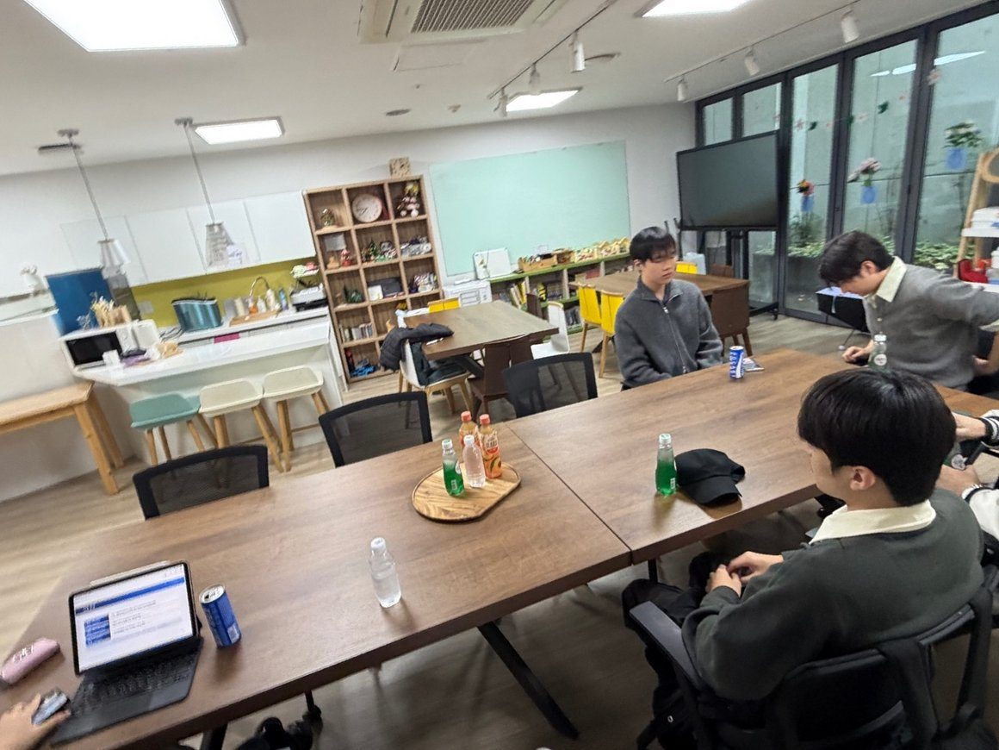
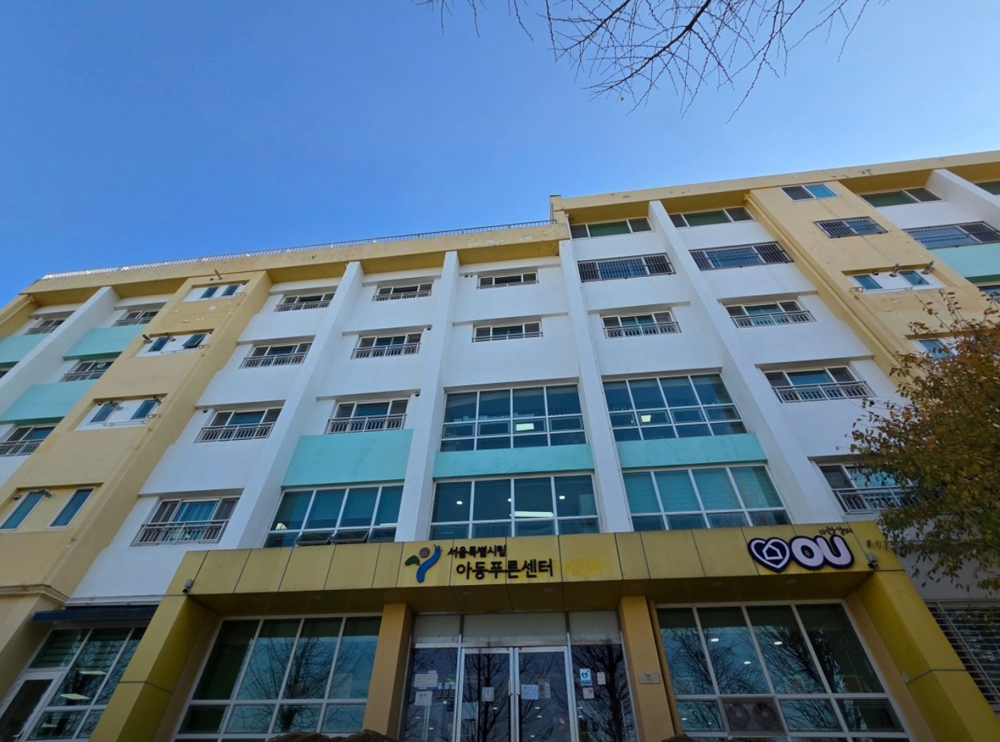
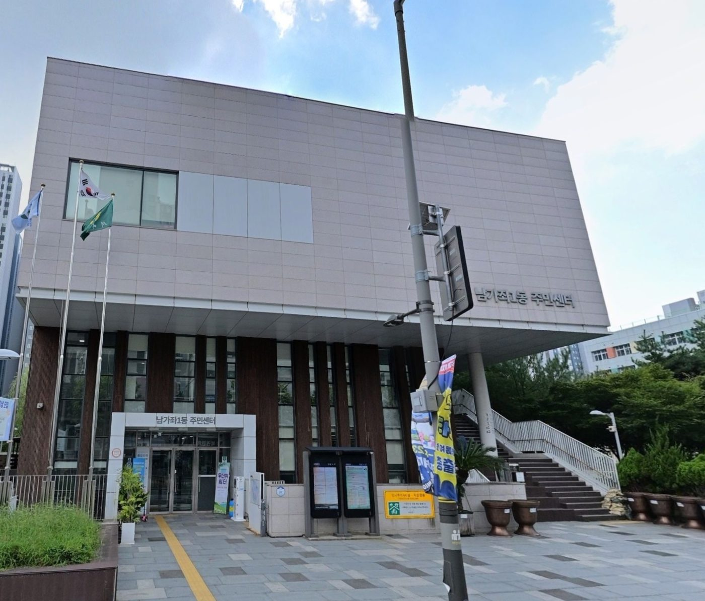
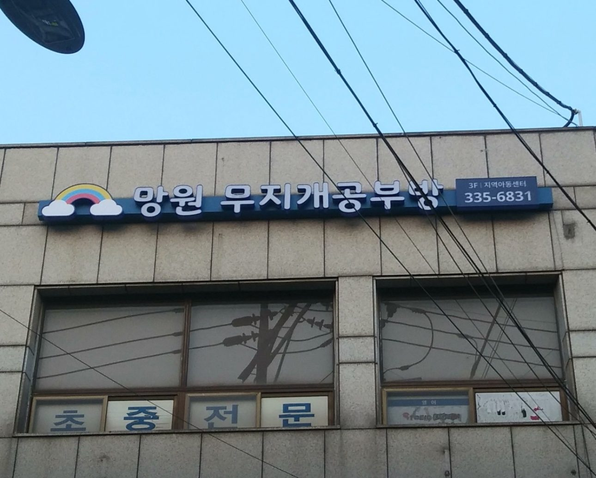

기관을 찾아온 과정
9.21서울 지역 학교 밖 청소년 지원센터, 교육복지센터, 청소년센터, 복지관 등 20여 곳을 조사하고 연락을 시도10.8마포구 학교 밖 청소년 도움센터 친구랑 사전 미팅. 활동으로는 이어지지 않음11.5서대문교육복지센터 사전 미팅. 센터의 소개로 서울특별시립 아동푸른센터와 연결11.27아동푸른센터에서 첫 만들기 활동 예정12.4망원무지개지역아동센터에서 문제집 나눔 예정12.7아동푸른센터에서 두 번째 만들기 활동 예정


서울특별시립 아동푸른센터
서울시가 2017년 6월 은평구 꿈나무마을 안에 설치한 아동복지시설입니다. 보호가 필요한 아동의 상담·치료·보호·교육과 가정 복귀를 돕고, 학대 피해 아동을 보호합니다. 만들기 활동은 모두 이곳에서, 센터에서 생활하는 아동·청소년과 진행합니다.
기관 누리집
서대문교육복지센터
서울시교육청이 자치구마다 한 곳씩 위탁 운영하는 지역교육복지센터입니다. 여러 어려움이 겹친 학생에게 학교 적응, 정서·행동, 가족 지원처럼 상황에 맞춘 통합지원을 합니다. 11월 5일 사전 미팅을 했고, 센터의 소개로 아동푸른센터와 연결됐습니다.
센터 블로그
망원무지개지역아동센터
방과 후 아이들이 머무는 지역아동센터입니다. 12월 4일, 센터에 필요한 물품을 물어보고 그에 맞춰 고른 우공비 문제집을 전달하고, 아이들과 이야기를 나눕니다.
활동 3 보기
만나는 대상
우리가 만나는 아동·청소년
아동푸른센터에서
생활하는 아동·청소년
EDU:BRIDGE가 만나는 대상은 은평구 서울특별시립 아동푸른센터에서 보호받으며 생활하는 아동·청소년입니다. 센터는 아동을 일시 보호하면서 이후의 양육 계획과 보호 조치를 정하는 곳입니다.
첫 활동인 계산기 클리커 만들기는 11명과 함께합니다.
센터가 하는 일
서울시가 2017년 6월 1일 꿈나무마을 안에 설치한 아동복지시설입니다.
- 보호가 필요한 아동의 상담·치료·보호·교육
- 가정 복귀 지원
- 아동학대의 발견과 예방, 피해 아동의 보호와 치료
센터는 아동이 어려움을 이겨 내고 즐겁고 당당하게 자라도록 곁에서 함께하는 것을 비전으로 둡니다.
센터의 전략목표 가운데 하나는 아동의 정서적 안정입니다. EDU:BRIDGE가 공부를 가르치는 활동 대신, 편하게 이야기 나누며 함께 만드는 활동을 고른 이유입니다.